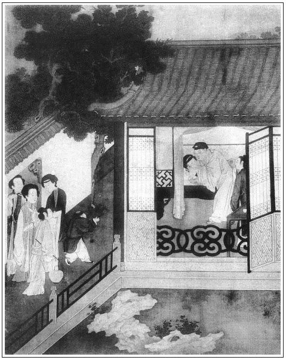

張回夫下一回瓶兒方死，此回宴重陽，乃不起之信也。然先陪寫一燒陰戶，且夾寫一金蓮之淫，是未寫瓶兒之死機，先已寫西門之死機也。何則？西門死時，自王六兒家來，以及潘六兒繼之方死，今自王六兒家來，潘六人繼之，已明明前後對照，豈非死機已伏？故於伏西門死機之時，即夾寫春梅發動之機。蓋春梅別茂，而西門已冷落於夕陽衰草矣。何以見春梅發動之機？曰以申二姐見之。蓋春梅，固龐二姐也。二姐者，二為少陰，六為老陰，明對六兒而名之也。然郁二姐者，鬱結其氣於蓮開之時也。今西門冷落已來，瓶罄花殘，其久郁之二姐，已將伸其志矣。故用入申二姐後文罵之，正所以一吐從前之郁。夫至春梅之氣盡吐，將又別換一番韶華，而去日之春光，能不盡付東流乎？故西門亦隨之而死，蓮、杏亦因之而散也。然插此意於瓶兒末死之先，真是龍門再世。
欲寫瓶兒之病，不能暢其筆意，則用寫醫至再至三，其講病源，論藥方，一時匆匆景象，則瓶兒之病不言而自見。若入俗手，一篇如何病重，的的剝剝，到底寫不出也。
寫算命起數，固見忙迫光景，又為冰鑒、卜龜作照也。
瓶兒本是花瓶，止為西門是生藥鋪中人，遂成藥瓶。而因之竹山亦以藥投之，今又聚胡、趙、何、任諸人之藥入內，宜乎喪身黃土，不能與諸花作緣也。故以諸醫人相亂成趣。
詞曰：
蛩聲泣露驚秋枕，淚濕鴛鴦錦。獨臥玉肌涼，殘更與恨長。陰風翻翠幌，雨澀燈花暗。畢竟不成眠，鴉啼金井寒。
──右調《菩薩蠻》

話說一日，韓道國鋪中回家，睡到半夜，他老婆王六兒與他商議道：「你我被他照顧，繡旁語不忘本。掙了恁些錢，也該擺席酒兒請他來坐坐。況他又丟了孩兒，只當與他釋悶，他能吃多少！彼此好看。就是後生小郎看著，繡旁伏得妙。到明日南邊去，也知財主和你我親厚，張夾直照揚州胡秀酒後一鬧。比別人不同。」韓道國道：「我心裡也是這等說。明日初五日是月忌，不好。到初六日，安排酒席，叫兩個唱的，具個柬帖，等我親自到宅內，請老爹散悶坐坐。我晚夕便往鋪子裡睡去。」繡眉下此一句，別不說緣故，兩下心照，道國固是解人。王六兒道：「平白又叫甚麼唱的？只怕他酒後要來這屋裡坐坐，不方便。隔壁樂三嫂家，常走的一個女兒申二姐，年紀小小的，且會唱，他又是瞽目的，請將他來唱唱罷。要打發他過去還容易。」韓道國道：「你說的是。」繡眉人家依老婆說的，亦只為其說的是耳。張夾四字乃忘八一生聲口。一宿晚景題過。
到次日，韓道國走到鋪子裡，央及溫秀才寫了個請柬兒，親見西門慶，聲喏畢，說道：「明日，小人家裡治了一杯水酒，無事請老爹貴步下臨，散悶坐一日。」因把請柬遞上去。西門慶看了，說道：「你如何又費此心。我明日倒沒事，衙門中回家就去。」韓道國作辭出門。到次早，拿銀子叫後生胡秀買嗄飯菜蔬，一面叫廚子整理，又拿轎子接了申二姐來，王六兒同丫鬟伺候下好茶好水，單等西門慶來到。等到午後，只見琴童兒先送了一壇葡萄酒來，繡眉這回不怕韓二要吃矣。然後西門慶坐著涼轎，玳安、王經跟隨，到門首下轎，頭戴忠靖冠，身穿青水緯羅直身，粉頭皂靴。韓道國迎接入內，見畢禮數，說道：「又多謝老爹賜將酒來。」正面獨獨安放一張交椅，西門慶坐下。
不一時，王六兒打扮出來，與西門慶磕了四個頭，回後邊看茶去了。須臾，王經拿出茶來，韓道國先取一盞，舉的高高的奉與西門慶，然後自取一盞，旁邊相陪。吃畢，王經接了茶盞下去，韓道國便開言說道：「小人承老爹莫大之恩，一向在外，家中小媳婦承老爹看顧，繡眉照顧著那一件？不說之說，妙。西門慶何以措辭。張夾明說矣。王經又蒙抬舉，叫在宅中答應，感恩不淺。前日哥兒沒了，雖然小人在那裡，媳婦兒因感了些風寒，不曾往宅裡弔問的，恐怕老爹惱。今日，一者請老爹解解悶，二者就恕俺兩口兒罪。」西門慶道：「無事又教你兩口兒費心。」說著，只見王六兒也在旁邊坐下。因向韓道國道：「你和老爹說了不？」道國道：「我還不曾說哩。」西門慶問道：「是甚麼？」王六兒道：「他今日要內邊請兩位姐兒來伏侍老爹，我恐怕不方便，張夾有何不便。故不去請。隔壁樂家常走的一個女兒，叫做申二姐，諸般大小時樣曲兒，連數落都會唱。我前日在宅裡，見那一位郁大姐唱的也中中的，還不如這申二姐唱的好。教我今日請了他來，唱與爹聽。未知你老人家心下何如？若好，到明日叫了宅裡去，唱與他娘每聽。」西門慶道：「既是有女兒，亦發好了。你請出來我看看。」不一時，韓道國叫玳安上來：「替老爹寬去衣服。」一面安放桌席，胡秀拿果菜案酒上來。王六兒把酒打開，燙熱了，在旁執壺，道國把盞，與西門慶安席坐下，然後才叫出申二姐來。西門慶睜眼觀看，見他：
高髻雲鬟，插著幾枝稀稀花翠，淡淡釵梳，綠襖紅裙，顯一對金蓮趫趫；桃腮粉臉，抽兩道細細春山。繡眉描寫處，獨不及秋波，作者用筆之妙。
望上與西門慶磕了四個頭。西門慶便道：「請起。你今青春多少？」申二姐道：「小的二十一歲了。」又問：「你記得多少唱？」申二姐道：「大小也記百十套曲子。」西門慶令韓道國旁邊安下個坐兒與他坐。
申二姐向前行畢禮，方才坐下。先拿箏來唱了一套《秋香亭》，然後吃了湯飯，添換上來，又唱了一套《半萬賊兵》。落後酒闌上來，西門慶吩咐：「把箏拿過去，取琵琶與他，等他唱小詞兒我聽罷。」那申二姐一逕要施逞他能彈會唱。一面輕搖羅袖，款跨鮫綃，頓開喉音，把弦兒放得低低的，彈了個《四不應·山坡羊》。唱完了，韓道國教渾家滿斟一盞，遞與西門慶。王六兒因說：「申二姐，你還有好《鎖南枝》，唱兩個與老爹聽。」那申二姐就改了調兒，唱《鎖南枝》道：
初相會，可意人，年少青春，不上二旬。黑鬖鬖兩朵烏雲，紅馥馥一點朱唇，臉賽夭桃如嫩筍。若生在畫閣蘭堂，端的也有個夫人分。可惜在章台，出落做下品。但能夠改嫁從良，勝強似棄舊迎新。
初相會，可意嬌，月貌花容，風塵中最少。瘦腰肢一撚堪描，俏心腸百事難學，恨只恨和他相逢不早。常則怨席上樽前，淺斟低唱相偎抱。一覷一個真，一看一個飽。雖然是半霎歡娛，權且將悶解愁消。
西門慶聽了這兩個《鎖南枝》，正打著他初請了鄭月兒那一節事來，心中甚喜。張夾明說出，又是一法。王六兒滿滿的又斟上一盞，笑嘻嘻說道：「爹，你慢慢兒的飲，申二姐這個才是零頭兒，繡眉語致都媚。他還記的好些小令兒哩。到明日閒了，拿轎子接了，唱與他娘每聽，管情比郁大姐唱的高。」西門慶因說：「申二姐，我重陽那日，使人來接你，去不去？」申二姐道：「老爹說那裡話，但呼喚，怎敢違阻！」西門慶聽見他說話伶俐，心中大喜。
不一時，交杯換盞之間，王六兒恐席間說話不方便，繡眉應前。叫他唱了幾套，悄悄向韓道國說：「教小廝招弟兒，送過樂三嫂家歇去罷。」臨去拜辭，西門慶向袖中掏出一包兒三錢銀子，賞他買弦。申二姐連忙嗑頭謝了。西門慶約下：「我初八日使人請你去。」王六兒道：「爹只使王經來對我說，等我這裡教小廝請他去。」說畢，申二姐往隔壁去了。張夾一個去。韓道國與老婆說知，也就往鋪子裡睡去了。繡眉一個悄悄說向，一個說知，都不說出，心事瞭然。張夾又一個去。只落下老婆在席上，張夾此句有胡秀在。陪西門慶擲骰飲酒。吃了一回，兩個看看吃的涎將上來，西門慶推起身更衣，就走入婦人房裡，兩個頂門頑耍。王經便把燈燭拿出來，在前半間張夾又一個去。和玳安、琴童兒做一處飲酒。張夾又安頓下兩個。
那後生胡秀，在廚下偷吃了幾碗酒，繡眉前說使後生看著，至此照出，作在針密如虱。張夾方出胡秀。打發廚子去了，走在王六兒隔壁供養佛祖先堂內，地下鋪著一領席，就睡著了。睡了一覺起來，忽聽見婦人房裡聲喚，又見板壁縫裡透過燈亮來，只道西門慶去了，韓道國在房中宿歇。暗暗用頭上簪子刺破板縫中糊的紙，往那邊張看。見那邊房中亮騰騰點著燈燭，不想西門慶和老婆在屋裡正幹得好。繡眉道國與王經、玳安等拾收已過，此番光景卻幻出胡秀以作波瀾。淩空駕奇，文心靈異如此。伶伶俐俐看見，張旁是板縫把老婆兩隻腿，卻是用腳帶吊在床頭上，西門慶上身止著一件綾襖兒，下身赤露，張夾是胡秀眼中。就在床沿上一來一往，一動一靜，搧打的連聲響亮，老婆口裡百般言語都叫將出來。良久，只聽老婆說：「我的親達！你要燒淫婦，隨你心裡揀著那塊只顧燒，淫婦不敢攔你。左右淫婦的身子屬了你，怕那些兒了！」西門慶道：「只怕你家裡的嗔是的。」繡旁豈有此理！老婆道：「那忘八七個頭八個膽，他敢嗔！他靠著那裡過日子哩？」張夾一路寫來，確是王六兒，作潘六兒不得。西門慶道：「你既一心在我身上，等這遭打發他和來保起身，亦發留他長遠在南邊，做個買手置貨罷。」繡旁道國十分大雅，此著似乎不必。張夾必講生意，是大章法。老婆道：「等走過兩遭兒，卻教他去。省的閒著在家做甚麼？他說倒在外邊走慣了，一心只要外邊去。你若下顧他，可知好哩！等他回來，我房裡替他尋下一個，我也不要他，一心撲在你身上，隨你把我安插在那裡就是了。我若說一句假，把淫婦不值錢身子就爛化了。」繡眉王六兒牢攏牽挽，技倆在金蓮之上。蓋金蓮地親，故用強；六兒地遠，故用柔，兩人心事異出而同揆也。西門慶道：「我兒，你快休賭誓！」兩個一動一靜，都被胡秀聽了個不亦樂乎。張夾自「只聽」至此，是一氣文字。
韓道國先在家中不見胡秀，只說往鋪子裡睡去了。走到緞子鋪裡，問王顯、榮海，說他沒來。韓道國一面又走回家，叫開門，前後尋胡秀，那裡得來，只見王經陪玳安、琴童三個在前邊吃酒。胡秀聽見他的語音來家，連忙倒在席上，又推睡了。不一時，韓道國點燈尋到佛堂地下，看見他鼻口內打鼾睡，張夾鼻口一齊打呼，假睡如畫。用腳踢醒，罵道：「賊野狗死囚，還不起來！我只說先往鋪子裡睡去，你原來在這裡挺得好覺兒。還不起來跟我去！」那胡秀起來，推揉了揉眼，楞楞睜睜跟道國往鋪子裡去了。
西門慶弄老婆，直弄夠有一個時辰，方才了事。燒了王六兒心口裡並𣭈蓋子上、尾亭骨兒上共三處香。老婆起來穿了衣服，教丫頭打發舀水淨了手，重篩暖酒，再上佳餚，情話攀盤。張眉胡秀一節，甚覺無味，不知為愛姐臨清地也。何則？使非胡秀此日看破，為道國杭州出醜，則太師府中出來，道國勢必投苗青矣。此等情節，皆作者經營苦心，方寫胡秀一看破也。又吃了幾鐘，方才起身上馬，玳安、王經、琴童三個跟著。到家中已有二更天氣，走到李瓶兒房中。李瓶兒睡在床上，見他吃的酣酣兒的進來，說道：「你今日在誰家吃酒來？」西門慶道：「韓道國家請我。見我丟了孩子，與我釋悶。他叫了個女先生申二姐來，年紀小小，好不會唱！又不說郁大姐。等到明日重陽，使小廝拿轎子接他來家，唱兩日你每聽，就與你解解悶。你緊心裡不好，休要只顧思想他了。」繡眉海棠著雨，楊柳經秋，冷致淒情，可憐可愛。說著，就要叫迎春來脫衣裳，和李瓶兒睡。李瓶兒道：「你沒的說！我下邊不住的長流，丫頭替我煎藥哩。你往別人屋裡睡去罷。你看著我成日好模樣兒罷了，只有一口游氣兒在這裡，又來纏我起來。」西門慶道：「我的心肝！我心裡捨不的你。只要和你睡，如之奈何？」李瓶兒瞟了他一眼，笑了笑兒：「誰信你那虛嘴掠舌的。我倒明日死了，你也捨不的我罷！」張夾說死者，自分未必死也。不知出口成讖矣。又道：「亦發等我好好兒，你再進來和我睡也不遲。」西門慶坐了一回，說道：「罷，罷。你不留我，等我往潘六兒那邊睡去罷。」李瓶兒道：「原來你去，省的屈著你那心腸兒。他那裡正等的你火裡火發，你不去，卻忙惚兒來我這屋裡纏。」繡眉西門慶捨此則彼，微瓶兒則金蓮寵極矣。瓶兒蓋心知之而心傷之。「往潘六兒那邊去」一語，固瓶兒不忍聞而不欲聞者，宜乎瓶兒之不起也。張夾深深埋恨。西門慶道：「你恁說，我又不去了。」李瓶兒微笑道：「我哄你哩，你去罷。」於是打發西門慶過去了。李瓶兒起來，坐在床上，迎春伺候他吃藥。拿起那藥來，止不住撲簌簌香腮邊滾下淚來，長吁了一口氣，繡眉可憐。方才吃了那盞藥。張夾子虛因氣何如？正是：
心中無限傷心事，付與黃鸝叫幾聲。
不說李瓶兒吃藥睡了，單表西門慶到於潘金蓮房裡。金蓮才叫春梅罩了燈上床睡下。忽見西門慶推開門進來便道：繡眉意中事若出之意外，全在忽見二字寫出。「我兒，又早睡了？」金蓮道：「稀幸！那陣風兒刮你到我這屋裡來！」張夾喜出望外。因問：「你今日往誰家吃酒去來？」西門慶道：「韓夥計打南邊來，見我沒了孩子，一者與我釋悶，二者照顧他外邊走了這遭，請我坐坐。」金蓮道：「他便在外邊，你在家又照顧他老婆了。」張夾剛寫王六兒，的是王六兒；接寫瓶兒，的是瓶兒；再接筆寫金蓮，又的是金蓮。絕不一點差錯，真是史筆。西門慶道：「夥計家，那裡有這道理？」婦人道：「夥計家，有這個道理！齊腰拴著根線兒，只怕㒲過界兒去了。你還搗鬼哄俺每哩，俺每知道的不耐煩了！你生日，賊淫婦他沒在這裡？你悄悄把李瓶兒壽字簪子，繡眉偏是他曉得，是固其性生天授也。張夾此處卻將試藥時所贈王六兒之簪補出，文字直千里荊門，神鬼出沒之致。黃貓黑尾偷與他，卻叫他戴了來施展。大娘、孟三兒，這一家子那個沒看見？吃我問了一句，他把臉兒都紅了，他沒告訴你？今日又摸到那裡去，賊沒廉恥的貨，一個大摔瓜長淫婦，喬眉喬樣，描的那水鬢長長的，搽的那嘴唇鮮紅的──倒像人家那血𣭈。甚麼好老婆，一個大紫腔色黑淫婦，我不知你喜歡他那些兒！繡眉極其醜詆。嗔道把忘八舅子也招惹將來，一早一晚教他好往回傳話兒。」西門慶堅執不認，笑道：「怪小奴才兒，單管只胡說，那裡有此勾當？今日他男子漢陪我坐，他又沒出來。」婦人道：「你拿這個話兒來哄我？誰不知他漢子是個明忘八，又放羊，又拾柴，一徑把老婆丟與你，圖你家買賣做，要賺你的錢使。繡眉慧心所照，如見肺肝。你這傻行貨子，只好四十里聽銃響罷了！」西門慶脫了衣裳，坐在床沿上，婦人探出手來，張夾是睡下情景，一絲不亂。把褲子扯開，繡旁著。摸見那話軟叮噹的，托子還帶在上面，說道：「可又來，你『臘鴨子煮到鍋裡──身子兒爛了，嘴頭兒還硬』。見放著不語先生在這裡，繡旁好美號。強盜和那淫婦怎麼弄聳，聳到這咱晚才來家？張夾甚不憤他這咱晚。弄的恁個樣兒，張夾甚不忍他恁樣兒。嘴頭兒還強哩！你賭個誓，我叫春梅舀一甌子涼水，你只吃了，我就算你好膽子。繡眉先設以必不可逃之數，隱隱說著自己，機鋒尖穎，比勘精詳，直可折獄。論起來，鹽也是這般鹹，張夾是，是。醋也是這般酸，張夾是，是。妙，妙。『禿子包網中──饒這一抿子兒也罷了』。若是信著你意兒，把天下老婆都耍遍了罷。賊沒羞的貨，一個大眼裡火行貨子！你早是個漢子，若是個老婆，就養遍街，㒲遍巷。」幾句說的西門慶睜睜的，只是笑。張夾一路開口一串鈴，是金蓮的話，作瓶兒不得，作玉樓、月娘、春梅亦不得。故妙。上的床來，叫春梅篩熱了燒酒，把金穿心盒兒內藥拈了一粒，放在口裡嚥下去，仰臥在枕上，令婦人：「我兒，你下去替你達品，品起來是你造化。」張夾王六兒弄軟，又要潘六兒弄硬；王六兒造化時，潘六兒幾乎不造化；潘六兒造化時，益知王六兒先造化過了；待兩六重陰，雙伐一硬不復軟之時，兩六兒又各自尋造化。正見西門可以造化人，而自無造化以活於世，可歎，可畏！那婦人一徑做喬張致，便道：「好乾淨兒！你在那淫婦窟窿子裡鑽了來，教我替你咂，可不臢殺了我！」西門慶道：「怪小淫婦兒，單管胡說白道的，那裡有此勾當？」婦人道：「那裡有此勾當？你指著肉身子賭個誓麼！」亂了一回，教西門慶下去使水，西門慶不肯下去，婦人旋向袖子裡掏出個汗巾來，將那話抹展了一回，繡旁妙用。方才用朱唇裹沒。繡眉金蓮明知是從六兒個中來，不敢不咂；西門慶亦知金蓮知其從六兒個中來，而使之不敢不咂。十分妙用，金蓮入其範圍矣。嗚咂半晌，咂弄的那話奢稜跳腦，暴怒起來，張夾又與尋常品玉不同。乃騎在婦人身上，縱麈柄自後插入牝中，兩手兜其股，蹲踞而擺之，肆行扇打，連聲響亮。燈光之下，窺玩其出入之勢，婦人倒伏在枕畔，舉股迎湊者久之。西門慶興猶不愜，張夾以上一反。將婦人仰臥朝上，張夾以下一正。那話上使了粉紅藥兒，頂入去，執其雙足，又舉腰沒稜露腦掀騰者將二三百度。婦人禁受不的，瞑目顫聲，張夾妙景，不可令人見者。沒口子叫：「達達，張旁「沒口子」三字，即掀騰二三百度註腳也。你這遭兒只當將就我，不使上他也罷了。」西門慶口中呼叫道：「小淫婦兒，你怕我不怕？再敢無禮不敢？」張夾與葡萄架對針。婦人道：「我的達達，罷麼，你將就我張夾句。些兒，我張夾句。再不敢了！張夾句。蓋金蓮一面叫，西門一面提，故斷斷續續一氣說不完，下文接口叫慢提也。達達慢慢提，看提散了我的頭髮。」張夾叫慢慢，正是不慢慢處。可想，可想。兩個顛鴛倒鳳，足狂了半夜，方才體倦而寢。
話休饒舌，又早到重陽令節。西門慶對吳月娘說：「韓夥計前日請我，一個唱的申二姐，生的人材又好，又會唱。我使小廝接他來，留他兩日，教他唱與你每聽。」又吩咐廚下收拾餚饌果酒，在花園大卷棚聚景堂內，安放大八仙桌，閤家宅眷，慶賞重陽。張旁閤家一總，行見彫零矣。不一時，王經轎子接的申二姐到了。入到後邊，與月娘眾人磕了頭。月娘見他年小，生的好模樣兒。問他套數，也會不多，諸般小曲兒倒記的有好些。一面打發他吃了茶食，先教在後邊唱了兩套，然後花園擺下酒席。那日，西門慶不曾往衙門中去，在家看著栽了菊花。請了月娘、李嬌兒、孟玉樓、潘金蓮、李瓶兒、孫雪娥並大姐，都在席上坐的。春梅、玉簫、迎春、蘭香在旁斟酒伏侍。申二姐先拿琵琶在旁彈唱。那李瓶兒在房中，因身上不方便，請了半日才來。恰似風兒刮倒的一般，張夾寫病，只如此寫。強打著精神陪西門慶坐，眾人讓他酒兒也不大吃。西門慶和月娘見他面帶憂容，眉頭不展，說道：「李大姐，你把心放開，教申二姐彈唱曲兒你聽。」玉樓道：「你說與他，教他唱甚麼曲兒，他好唱。」李瓶兒只顧不說。正飲酒中間，忽見王經走來說道：「應二爹、常二叔來了。」西門慶道：「請你應二爹、常二叔在小卷棚內坐，我就來。」王經道：「常二叔教人拿了兩個盒子在外頭。」西門慶向月娘道：「此是他成了房子，買禮來謝我的意思。」月娘道：「少不的安排些甚麼管待他，怎好空了他去！你陪他坐去，我這裡吩咐看菜兒。」繡眉是當人口吻。西門慶臨出來，又叫申二姐：「你唱個好曲兒，與你六娘聽。」張夾寫出鍾愛。一直往前邊去了。金蓮道：「也沒見這李大姐，隨你心裡說個甚麼曲兒，教申二姐唱就是了，辜負他爹的心！為你叫將他來，你又不言語。」催逼的李瓶兒急了，半日才說出來：「你唱個『紫陌紅塵』罷。」那申二姐道：「這個不打緊，我有。」於是取過箏來，頓開喉音，細細唱了一套。唱畢，吳月娘道：「李大姐，好甜酒兒，你吃上一鍾兒。」李瓶兒又不敢違阻，拿起鍾兒來嚥了一口兒，又放下了。張夾寫病只如此寫。坐不多時，下邊一陣熱熱的來，又往屋裡去了，不題。張夾寫病只如此寫。
且說西門慶到了小卷棚翡翠軒，只見應伯爵與常峙節在松牆下正看菊花。原來松牆兩邊，擺放二十盆，都是七尺高，各樣有名的菊花，繡眉政固不俗。也有大紅袍、狀元紅、紫袍金帶、白粉西、黃粉西、滿天星、醉楊妃、玉牡丹、鵝毛菊、鴛鴦花之類。西門慶出來，二人向前作揖。常峙節即喚跟來人，把盒兒掇進來。西門慶一見便問：「又是甚麼？」伯爵道：「常二哥蒙哥厚情，成了房子，無可酬答，教他娘子製造了這螃蟹鮮並兩隻爐燒鴨兒，邀我來和哥坐坐。」西門慶道：「常二哥，你又費這個心做甚麼？你令正病才好些，你又禁害他！」伯爵道：「我也是恁說。他說道別的東西兒來，恐怕哥不稀罕。」西門慶令左右打開盒兒觀看：四十個大螃蟹，都是剔剝淨了的，裡邊釀著肉，外用椒料姜蒜米兒團粉裹就，香油煠，醬油醋造過，香噴噴，酥脆好食。又是兩大只院中爐燒熟鴨。西門慶看了，即令春鴻、王經掇進去，吩咐拿五十文錢賞拿盒人，因向常峙節謝了。
琴童在旁掀簾，請入翡翠軒坐。伯爵只顧誇獎不盡好菊花，問：「哥是那裡尋的？」西門慶道：「是管磚廠劉太監送的。這二十盆，就連盆都送與我了。」張夾反重在盆，是市井人愛花。伯爵道：「花到不打緊，這盆正是官窯雙箍鄧漿盆，繡眉前便有一番誇獎，鑿鑿可據。都是用絹羅打，用腳跐過泥，才燒造這個物兒，與蘇州鄧漿磚一個樣兒做法。如今那裡尋去！」誇了一回。張夾只誇盆，是市井幫閒。西門慶喚茶來吃了，因問：「常二哥幾時搬過去？」伯爵道：「從兌了銀子三日就搬過去了。昨見好日子，買了些雜貨兒，門首把鋪兒也開了。就是常二嫂兄弟，替他在鋪裡看銀子兒。」西門慶道：「俺每幾時買些禮兒，休要人多了，再邀謝子純你三四位，我家裡整理菜兒抬了去──休費煩常二哥一些東西──叫兩個妓者，咱每替他暖暖房，耍一日。」常峙節道：「小弟有心也要請哥坐坐，算計來不敢請。地方兒窄狹，只怕褻瀆了哥。」西門慶道：「沒的扯淡，那裡又費你的事起來。如今使小廝請將謝子純來，和他說說。」即令琴童兒：「快請你謝爹去！」伯爵因問：「哥，你那日叫那兩個去？」西門慶笑道：「叫將鄭月兒和洪四兒去罷。」伯爵道：「哥，你是個人，你請他就不對我說聲，我怎的也知道了？比李桂兒風月如何？」西門慶道：「通色絲子女不可言！」伯爵道：「他怎的前日你生日時，那等不言語，扭扭的，也是個肉佞賊小淫婦兒。」西門慶道：「等我到幾時再去著，也攜帶你走走。你月娘會打的好雙陸，你和他打兩貼雙陸。」伯爵道：「等我去混那小淫婦兒，休要放了他！」西門慶道：「你這歪狗才，不要惡識他便好。」正說著，謝希大到了，聲諾畢，坐下。西門慶道：「常二哥如此這般，新有了華居，瞞著俺每，已搬過去了。咱每人隨意出些分資，休要費煩他絲毫。我這裡整治停當，教小廝抬到他府上，我還叫兩個妓者，咱耍一日何如？」張眉分明要寫下文瓶兒死後幾大篇文字，恐直直出落有痕，故虛寫一事，以預為襯疊，使看者擬看下即常二暖房，不知一過瓶兒死也。謝希大道：「哥吩咐每人出多少分資，俺每都送到哥這裡來就是了。還有那幾位？」西門慶道：「再沒人，只這三四個兒，每人二星銀子就夠了。」伯爵道：「十分人多了，他那裡沒地方兒。」
正說著，只見琴童來說：「吳大舅來了。」西門慶道：「請你大舅這裡來坐。」不一時，吳大舅進入軒內，先與三人作了揖，然後與西門慶敘禮坐下。小廝拿茶上來，同吃了茶，吳大舅起身說道：「請姐夫到後邊說句話兒。」西門慶連忙讓大舅到後邊月娘房裡。月娘還在卷棚內與眾姊妹吃酒聽唱，聽見說：「大舅來了，爹陪著在後邊說話哩。」一面走到上房，見大舅道了萬福，叫小玉遞上茶來。大舅向袖中取出十兩銀子遞與月娘，說道：「昨日府裡才領了三錠銀子，姐夫且收了這十兩，餘者待後次再送來。」西門慶道：「大舅，你怎的這般計較？且使著，慌怎的！」大舅道：「我恐怕遲了姐夫的。」西門慶因問：「倉廒修理的也將完了？」大舅道：「還得一個月終完。」西門慶道：「工完之時，一定撫按有些獎勵。」大舅道：「今年考選軍政在邇，還望姐夫扶持，大巡上替我說說。」張夾還十兩者為此。西門慶道：「大舅之事，都在於我。」說畢話，月娘道：「請大舅前邊同坐罷。」大舅道：「我去罷，只怕他三位來有甚麼話說。」西門慶道：「沒甚麼話。常二哥新近問我借了幾兩銀子，買下了兩間房子，已搬過去了，今日買了些禮兒來謝我，節間留他每坐坐。大舅來的正好。」於是讓至前邊坐了。月娘連忙叫廚下打髮菜兒上去。琴童與王經先安放八仙桌席端正，西門慶旋教開庫房，拿出一壇夏提刑家送的菊花酒來。打開張夾映前。碧靛清，噴鼻香，未曾篩，先攙一瓶涼水，以去其蓼辣之性，然後貯於布甑內，篩出來醇厚好吃，又不說葡萄酒。張夾金蓮將謝矣，只覺自生子加官一回，直寫至清明節，俱是冷氣撲人。我最不耐讀西門既死以後，我更不耐讀西門未死以前。叫王經用小金鐘兒斟一杯兒，先與吳大舅嘗了，然後，伯爵等每人都嘗訖，極口稱羨不已。須臾，大盤大碗擺將上來，眾人吃了一頓。然後才拿上釀螃蟹並兩盤燒鴨子來，伯爵讓大舅吃。連謝希大也不知是甚麼做的，這般有味，酥脆好吃。西門慶道：「此是常二哥家送我的。」大舅道：「我空癡長了五十二歲，並不知螃蟹這般造作，委的好吃！」伯爵又問道：「後邊嫂子都嘗了嘗兒不曾？」西門慶道：「房下每都有了。」伯爵道：「也難為我這常嫂子，真好手段兒！」常峙節笑道：「賤累還恐整理的不堪口，教列位哥笑話。」
吃畢螃蟹，左右上來斟酒，西門慶令春鴻和書僮兩個，在旁一遞一個歌唱南曲。應伯爵忽聽大卷棚內彈箏歌唱之聲，便問道：「哥，今日李桂姐在這裡？不然，如何這等音樂之聲？」西門慶道：。「你再聽，看是不是？」伯爵道：「李桂姐不是，就是吳銀兒。」西門慶道：「你這花子單管只瞎謅。倒是個女先生。」伯爵道：「不是郁大姐？」西門慶道：「不是他，這個是申二姐。張夾申者，伸也。郁者，鬱也。讎仇得志，白虹空吐，所謂鬱也。眼見冰山，形消白日，前此悶鬱，一朝吐氣，能不謂之伸哉！年小哩，好個人材，又會唱。」伯爵道：「真個這等好？哥怎的不牽出來俺每瞧瞧？就唱個兒俺每聽。」西門慶道：「今日你眾娘每大節間，叫他來賞重陽頑耍，偏你這狗才耳朵尖，聽的見！」伯爵道：「我便是千里眼，順風耳，隨他四十里有蜜蜂兒叫，我也聽見了。」謝希大道：「你這花子，兩耳朵似竹籤兒也似，愁聽不見！」兩個又頑笑了一回，伯爵道：「哥，你好歹叫他出來，俺每見見兒，俺每不打緊，教他只當唱個與老舅聽也罷了。休要就古執了。」西門慶吃他逼迫不過，一面使王經領申二姐出來唱與大舅聽。不一時，申二姐來，望上磕了頭起來，旁邊安放交床兒與他坐下。伯爵問申二姐：「青春多少？」申二姐回道：「屬牛的，二十一歲了。」又問：「會多少小唱？」申二姐道：「琵琶箏上套數小唱，也會百十來套。」伯爵道：「你會許多唱也夠了。」西門慶道：「申二姐，你拿琵琶唱小詞兒罷，省的勞動了你。說你會唱『四夢八空』，張夾夫一夢一空，已全空矣，況一夢兩空，天下安往非夢，亦安往非空？然而不夢亦不空，又不可不知。《金瓶》點題，每在曲名小令，曰又一大章法。你唱與大舅聽。」吩咐王經、書僮兒，席間斟上酒。那申二姐款跨鮫綃，微開檀口，慢慢唱著，眾人飲酒不題。
且說李瓶兒歸到房中，坐淨桶，下邊似尿的一般，只顧流將起來，登時流的眼黑了。起來穿裙子，忽然一陣旋暈，向前一頭撞倒在地。饒是迎春在旁搊扶著，還把額角上磕傷了皮。和奶子搊到炕上，半日不省人事。慌了迎春，忙使繡春：「快對大娘說去！」繡春走到席上，報與月娘眾人。月娘撇了酒席，與眾姐妹慌忙走來看視。見迎春、奶子兩個搊扶著他坐在炕上，不省人事。便問：「他好好的進屋裡，端的怎麼來就不好了？」迎春揭開淨桶與月娘瞧，把月娘諕了一跳。說道：「他剛才只怕吃了酒，助趕的他血旺了，流了這些。」玉樓、金蓮都說：「他幾曾大吃酒來！」一面煎燈心薑湯灌他。半晌甦醒過來，才說出話兒來。月娘問：「李大姐，你怎的來？」李瓶兒道：「我不怎的。張夾妙，逼真。坐下桶子起來穿裙子，只見眼兒前黑黑的一塊子，就不覺天旋地轉起來，由不的身子就倒了。」月娘便要使來安兒：「請你爹進來──對他說，教他請任醫官來看你。」張夾是。李瓶兒又嗔教請去：「休要大驚小怪，打攪了他吃酒。」繡眉瓶兒、月娘一對婆心。月娘可敬，瓶兒可憐。張夾亦是不知，皆是寫瓶兒病甚，一時諸人倉皇之態，為下文請醫算命等一影也。月娘吩咐迎春：「打鋪教你娘睡罷。」月娘於是也就吃不成酒了，吩咐收拾了傢伙，都歸後邊去了。
西門慶陪侍吳大舅眾人，至晚歸到後邊月娘房中。月娘告訴李瓶兒跌倒之事，西門慶慌走到前邊來看視。見李瓶兒睡在炕上，面色蠟查黃了，扯著西門慶衣袖哭泣。張夾寫得出。西門慶問其所以，李瓶兒道：「我到屋裡坐榪子，不知怎的，下邊只顧似尿也一般流將起來，不覺眼前一塊黑黑的。起來穿裙子，天旋地轉，就跌倒了。」西門慶見他額上磕傷一道油皮，說道，「丫頭都在那裡，不看你，怎的跌傷了面貌？」李瓶兒道：「還虧大丫頭都在跟前，和奶子搊扶著我，不然，還不知跌的怎樣的。」西門慶道：「我明早請任醫官來看你。」當夜就在李瓶兒對面床上睡了一夜。張夾病重第一日。
次日早晨，往衙門裡去，旋使琴童請任醫官去了。直到晌午才來。西門慶先在大廳上陪吃了茶，使小廝說進去。李瓶兒房裡收拾乾淨，熏下香，然後請任醫官進房中。診畢脈，走出外邊廳上，對西門慶說：「老夫人脈息，比前番甚加沉重，繡旁細。七情傷肝，肺火太旺，以致木旺土虛，血熱妄行，猶如山崩而不能節制。若所下的血紫者，猶可以調理；若鮮紅者，乃新血也。學生撮過藥來，若稍止，則可有望；不然，難為矣。」繡眉此醫見理極明。張夾作商量近來常套也。西門慶道：「望乞老先生留神加減，學生必當重謝！」任醫官道：「是何言語！你我厚間，又是明用情分，學生無不盡心。」西門慶待畢茶，送出門，隨即具一疋杭絹、二兩白金，使琴童兒討將藥來，名曰「歸脾湯」，乘熱吃下去，其血越流之不止。西門慶越發慌了，張夾一個醫生。又請大街口胡太醫來瞧。胡太醫說是氣沖血管，熱入血室，亦取將藥來。吃下去，如石沉大海一般。張夾又一個醫生。
月娘見前邊亂著請太醫，只留申二姐住了一夜，與了他五錢銀子、一件雲絹比甲兒並花翠，裝了個盒子，就打發他坐轎子去了。張夾閒細之甚。花子由自從那日開張吃了酒去，張夾偏照得到。聽見李瓶兒不好，使了花大嫂，買了兩盒禮來看他。見他瘦的黃懨懨兒，不比往時，兩個在屋裡大哭了一回。繡旁亦是好人。張夾為子虛哭才是，故哭人亦有可殺之道。月娘後邊擺茶請他吃了。韓道國說：「東門外住的一個看婦人科的趙太醫，張夾又是一個醫生。指下明白，極看得好。前歲，小媳婦月經不通，繡眉此醫想善於打胎，與瓶兒固非對症之劑。是他看來。張夾對財東說房下月經，妙絕。老爹請他來看看六娘，管情就好哩。」西門慶聽了，就使琴童和王經兩個疊騎著頭口，張夾琴童者，瓶兒人也，王經者，道國所薦也，故兩用之。往門外請趙太醫去了。
西門慶請了應伯爵來，和他商議道：「第六個房下，甚是不好的重，如之奈何？」伯爵失驚道：「這個嫂子貴恙說好些，怎的又不好起來？」西門慶道：「自從小兒沒了，著了憂戚，把病又發了。昨日重陽，我接了申二姐，與他散悶頑耍，他又沒好生吃酒，誰知走到屋中就暈起來，一交跌倒，把臉都磕破了。請任醫官來看，說脈息比前沉重。吃了藥，倒越發血盛了。」伯爵道：「你請胡太醫來看，怎的說？」西門慶道：「胡太醫說，是氣沖了血管，吃了他的，也不見動靜。張夾又將兩醫一描。今日韓夥計說，門外一個趙太醫，名喚趙龍崗，專科看婦女，我使小廝請去了。把我焦愁的了不的。生生為這孩子不好，白日黑夜思慮起這病來了。婦女人家，又不知個回轉，勸著他，又不依你，叫我無法可處。」繡眉丈夫處此真難。
正說著，平安來報：「喬親家爹來了。」張夾寫得六親倉皇之甚，便是瓶兒寵眷益張。西門慶一面讓進廳上，同伯爵敘禮坐下。喬大戶道：「聞得六親家母有些不安，特來候問。」西門慶道：「便是。一向因小兒沒了，著了憂戚，身上原有些不調，又發起來了。蒙親家掛念。」喬大戶道：「也曾請人來看不曾？」西門慶道：「常吃任後溪的藥，昨日又請大街胡先生來看，吃藥越發轉盛。今日又請門外專看婦人科趙龍崗去了。」喬大戶道：「咱縣門前住的何老人，張夾又是一個醫生。大小方脈俱精。他兒子何歧軒，見今上了個冠帶醫士。張夾又帶出一個冠帶醫生。親家何不請他來看看親家母？」西門慶道：「既是好，等趙龍崗來，來過再請他來看看。」喬大戶道：「親家，依我愚見，不如先請了何老人來，再等趙龍崗來，叫他兩個細講一講，就論出病原來了。繡眉何家積祖名醫。然後下藥，無有不效之理。」張夾上文兩醫次弟接來，此處兩醫一總接去，章法不板。西門慶道：「親家說的是。」一面使玳安拿拜帖兒和喬通去請。
那消半晌，何老人到來，與西門慶、喬大戶等作了揖，讓於上面坐下。張夾反是老人先到，錯落之甚。西門慶舉手道：「數年不見你老人家，不覺越發蒼髯皓首。」喬大戶又問：「令郎先生肄業盛行？」何老人道：「他逐日縣中迎送，也不得閒，倒是老拙常出來看病。」伯爵道：「你老人家高壽了，還這等健朗。」何老人道：「老拙今年癡長八十一歲。」張夾老兒壽何長，瓶兒壽何短，是名何老人也。敘畢話，看茶上來吃了，小廝說進去。須臾，請至房中，就床看李瓶兒脈息，旋搊扶起來，坐在炕上，形容瘦的十分狼狽了。但見他：
面如金紙，體似銀條。看看減褪丰標，漸漸消磨精彩。隱隱耳虛聞磐響，昏昏眼暗覺螢飛。六脈細沉，一靈縹緲，喪門弔客已臨身，扁鵲盧醫難下手。
何老人看了脈息，出到廳上，向西門慶、喬大戶說道：「這位娘子，乃是精沖了血管起，繡旁病從胡僧藥起。然後著了氣惱。氣與血相搏，則血如崩。繡眉畢竟老醫，開口道破。張夾方點病源。不知當初起病之由是也不是？」西門慶道：「是便是，卻如何治療？」
正論間，忽報：「琴童和王經請了趙先生來了。」何老人便問：「是何人？」
西門慶道：「也是夥計舉來一醫者，你老人家只推不知，待他看了脈息，你老人家和他講一講，好下藥。」不一時，趙太醫從外而入，西門慶與他敘禮畢，然後與眾人相見。何、喬二老居中，讓他在左，伯爵在右，西門慶主位相陪。吃了茶，趙太醫便問：「列位尊長貴姓？」喬大戶道：「俺二人一姓何，一姓喬。」伯爵道：「在下姓應。老先想就是趙龍崗先生了。」趙太醫答道：「龍崗是賤號。繡旁開口便妙。在下以醫為業，家祖見為太醫院院判，家父見充汝府良醫，祖傳三輩，習學醫術。繡眉只少一副串鈴，已供出一個真方假藥面孔。每日攻習王叔和、東垣勿聽子《藥性賦》、《黃帝素問》、《難經》、《活人書》、《丹溪纂要》、《丹溪心法》、《潔古老脈訣》、《加減十三方》、《千金奇效良方》、《壽域神方》、《海上方》，無書不讀。藥用胸中活法，脈明指下玄機。六氣四時，辨陰陽之標格；七表八里，定關格之沉浮。繡眉擬信餘瀋，便覺談吐風生，當今儒道，不少此輩。風虛寒熱之症候，一覽無餘；弦洪芤石之脈理，莫不通曉。小人拙口鈍吻，不能細陳。」何老人聽了，道：「敢問看病當以何者為先？」趙太醫道：「古人云，望聞問切，神聖功巧。學生先問病，後看脈，還要觀其氣色。就如子平兼五星一般，繡旁引得不通，惟不通故妙。才看得準，庶乎不差。」張夾若止講病人，便令筆墨皆穢；止講醫人，卻又筆墨枯澀。看他用一搗鬼雜於其間，便令病家真是忙亂，醫人真是嘈雜，一時情景如畫，非借此罵岐黃流也。何老人道：「既是如此，請先生進去看看。」西門慶即令琴童：「後邊說去，又請了趙先生來了。」
不一時，西門慶陪他進入李瓶兒房中。那李瓶兒方才睡下安逸一回，繡旁細。又搊扶起來，靠著枕褥坐著。這趙太醫先診其左手，次診右手，便教：「老夫人抬起頭來，看看氣色。」那李瓶兒真個把頭兒揚起來。趙太醫教西門慶：「老爹，你問聲老夫人，我是誰？」繡旁奇。張夾當答之是搗鬼。西門慶便教李瓶兒：「你看這位是誰？」那李瓶兒抬頭看了一眼，便低聲說道：「他敢是太醫？」趙先生道：「老爹，不妨事，還認的人哩。」繡眉妙極，一出幽閨旅病。張夾認得卿，乃認得鬼，如何不妨事？豈借卿以搗予虛乎？西門慶道：「趙先生，你用心看，我重謝你。」一面看視了半日，說道：「老夫人此病，休怪我說，據看其面色，又診其脈息，非傷寒，只為雜症，不是產後，定然胎前。」張夾近世秘訣。西門慶道：「不是此疾。先生你再仔細診一診。」趙先生又沉吟了半晌道：「如此面色這等黃，多管是脾虛洩瀉，再不然定是經水不調。」西門慶道：「實說與先生，房下如此這般，下邊月水淋漓不止，所以身上都瘦弱了。有甚急方妙藥，我重重謝你。」趙先生道：「如何？我就說是經水不調。不打緊處，小人有藥。」繡眉趁口敲來，近日醫人多得此活。張夾近世秘訣。
西門慶一面同他來到前廳，喬大戶、何老人問他甚麼病源，趙先生道：「依小人講，只是經水淋漓。」何老人道：「當用何藥治之？」趙先生道：「我有一妙方，用著這幾味藥材，吃下去管情就好。聽我說：
甘草甘遂與碙砂，黎蘆巴豆與芫花，薑汁調著生半夏，用烏頭杏仁天麻。這幾味兒齊加，蔥蜜和丸只一撾，清晨用燒酒送下。」
何老人聽了，便道：「這等藥恐怕太狠毒，吃不得。」趙先生道：「自古毒藥苦口利於病。怎麼吃不得？」西門慶見他滿口胡說，因是韓夥計舉保來，不好囂他，稱二錢銀子，也不送，就打發他去了。因向喬大戶說：「此人原來不知甚麼。」何老人道：「老拙適才不敢說，此人東門外有名的趙搗鬼，專一在街上賣杖搖鈴，哄過往之人，他那裡曉的甚脈息病源！」因說：「老夫人此疾，老拙到家撮兩帖藥來，遇緣，若服畢經水少減，胸口稍開，就好用藥。只怕下邊不止，就難為矣。」說畢，起身。
西門慶封白金一兩，使玳安拿盒兒討將藥來，晚夕與李瓶兒吃了，並不見分毫動靜。張夾第二日。吳月娘道：「你也省可與他藥吃。他飲食先阻住了，肚腹中有甚麼兒，只是拿藥淘碌他。繡眉此言若出自金蓮，吾便疑為妒心下石，出自月娘，當是聖人之心。前者，那吳神仙算他三九上有血光之災，今年卻不整二十七歲了。你還使人尋這吳神仙去，張夾神仙來，卻不依他。神仙去，卻又尋去。叫替他打算算那祿馬數上如何。只怕犯著甚麼星辰，替他禳保禳保。」西門慶聽了，旋差人拿帖兒往周守備府裡問去。那裡回說：「吳神仙雲遊之人，來去不定。但來，只在城南土地廟下。今歲從四月裡，往武當山去了。要打數算命，真武廟外有個黃先生打的好數，張夾未見黃真人，先有黃先生，妙。一數只要三錢銀子，不上人家門。」西門慶隨即使陳敬濟拿三錢銀子，逕到北邊真武廟門首黃先生家。繡眉寫出匆忙混亂，一毫不能主持，當局人自是如是。門上貼著：「抄算先天易數，每命卦金三錢。」陳敬濟向前作揖，奉上卦金，說道：「有一命煩先生推算。」寫與他八字：女命，年二十七歲，正月十五日午時。這黃先生把算子一打，就說：「這個命，辛未年庚寅月辛卯日甲午時，理取印綏之格，借四歲行運。四歲己未，十四歲戊午，二十四歲丁巳，三十四歲丙辰。今年流年丁酉，比肩用事，歲傷日干，計都星照命，又犯喪門五鬼，災殺作炒。夫計都者，陰晦之星也。其象猶如亂絲而無頭，變異無常。大運逢之，多主暗昧之事，引惹疾病，主正、二、三、七、九月病災有損，小口凶殃，小人所算，口舌是非，主失財物。或是陰人，大為不利。」繡眉如此術家，並不多得。抄畢數，敬濟拿來家。西門慶正和應伯爵、溫秀才坐的，見抄了數來，拿到後邊，解說與月娘聽。見命中多凶少吉，不覺──
眉間搭上三黃鎖，腹內包藏一肚愁。
文回文禹門云：《金瓶梅》中，有燒香一事，不解是何心思，有何意味，豈亦割臂之類歟？殆亦淫之極而作此舉耳。
王六兒之偷西門慶，任其為所欲為，彼蓋有所圖也。此貪財而彼好色，原非因情義起見。但細玩金蓮之語，王六兒之色，並非中上人材，在西門慶尤不當好之如此之甚。家中有許多妖精，院內有多少狐狸，何竟棄膏梁而啖藜藿乎？然則西門慶非真好色者，不過淫而已。淫者無情，此必然之理也。
西門慶何獨於瓶兒一往情深也？此則瓶兒實有以感動其心者：自入西門之家，溫柔安靜，並無遽色疾言，財物不敢自私，即身骸亦不敢自愛，一任西門慶之所欲而為之，以至因此而得病，病而至於不可為。西門慶詎不知之？是瓶兒生因西門慶，死亦因西門慶，生生死死，始終一西門慶。設西門慶死在前，瓶兒亦必不活。夫豈李、孟、潘、孫、龐之所能比也，西門慶又安能忘之？